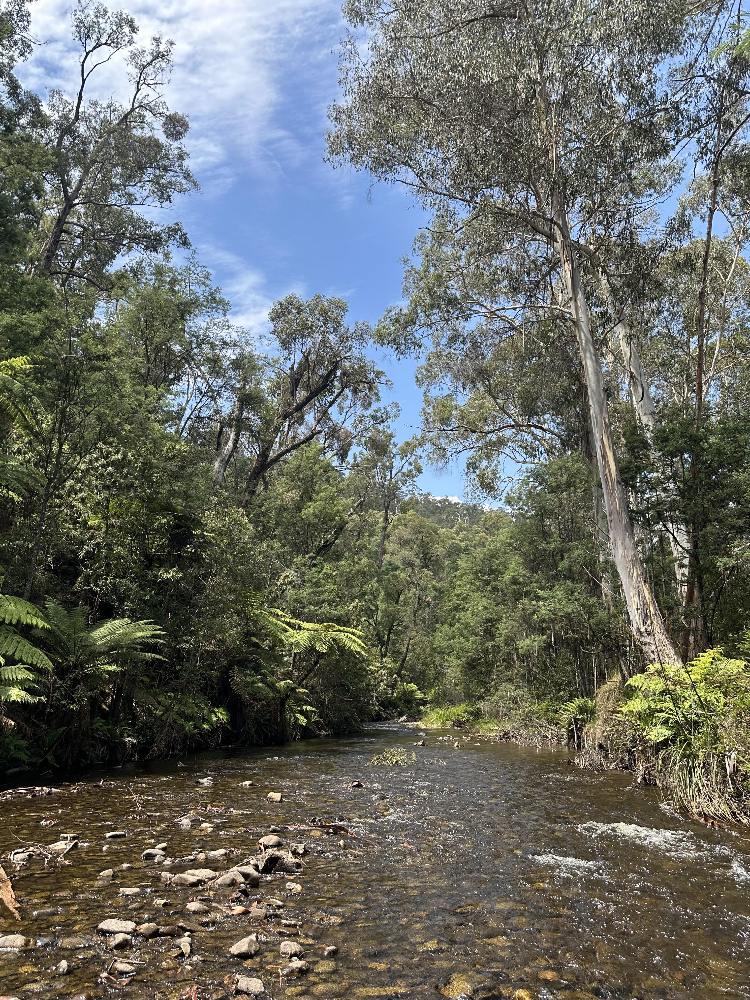
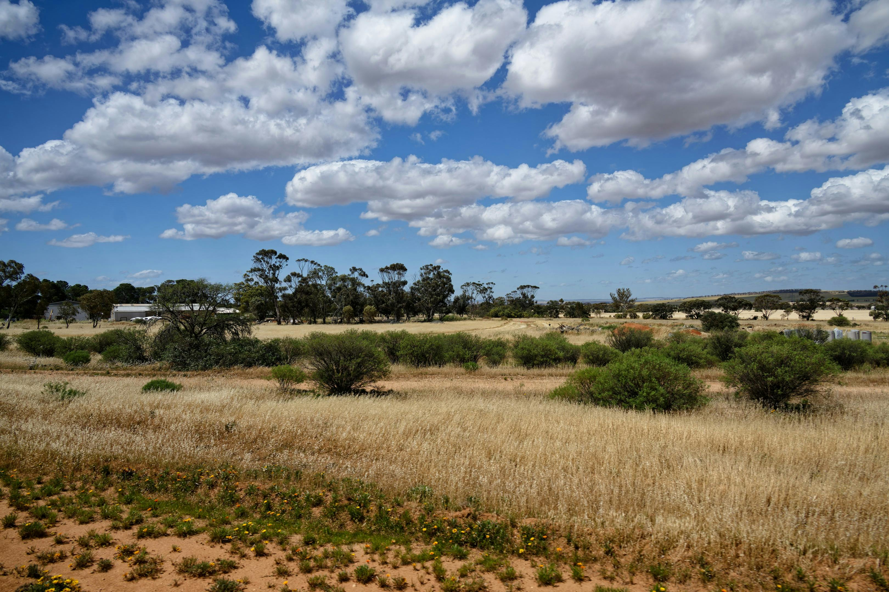
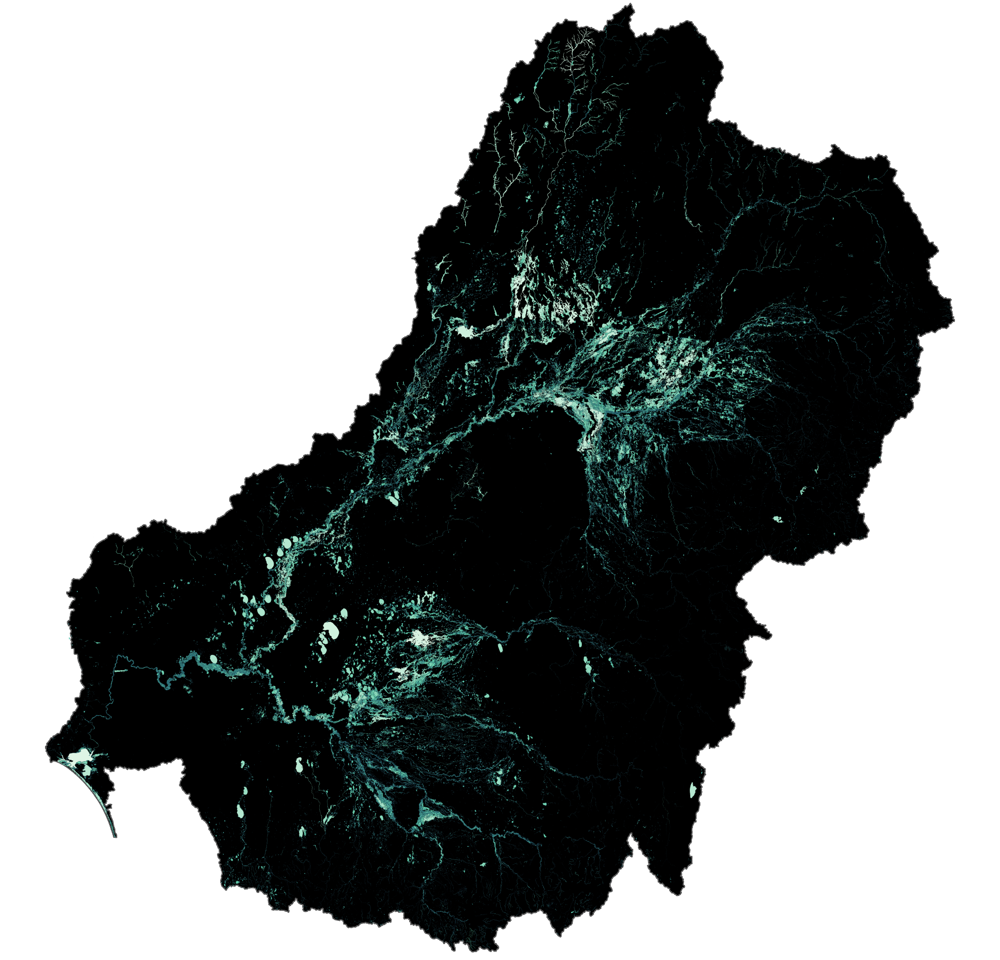

Confluence Analytics specializes in ecological and agricultural consulting with a focus on water management, sustainability, and biodiversity conservation. We bridge the gap between complex science and practical management decisions.
Insights for a complex and changing world

Our Mission
Confluence Analytics was founded on the principle that science should directly inform and improve real-world management decisions. We specialize in translating complex environmental data and responses into clear, actionable insights that drive sustainable outcomes.
What Sets Us Apart
Mechanistic Understanding
We don’t just identify patterns, we understand the underlying mechanisms driving system responses. This approach identifies the why and enables more robust projections under different scenarios.
Scale Expertise
From local watersheds to regional farming systems and national ecosystems, we excel at modelling complex outcomes across large, heterogeneous systems while maintaining scientific rigour.
Actionable Insights
Our outputs are scientifically robust yet accessible, designed to be understandable, interpretable, and actionable by managers and non-scientific stakeholders.
Real-World Focus
We ensure our analysis addresses genuine needs from real people, delivering solutions that make a measurable difference in the field.


Our Approach
At Confluence Analytics, we combine:
- Advanced data acquisition and analysis techniques
- Mechanistic response modelling at multiple scales
- Scenario modelling for robust projections of potential actions and future conditions
- Clear communication of complex scientific findings

Whether you’re managing agricultural landscapes, conserving biodiversity, or optimizing water resources, we help you make informed decisions backed by solid science.
Trusted by Management Agencies and Agricultural Operations
We work with diverse clients who need scientifically-grounded solutions for complex environmental challenges. Our interdisciplinary approach ensures that ecological insights translate into practical management strategies.